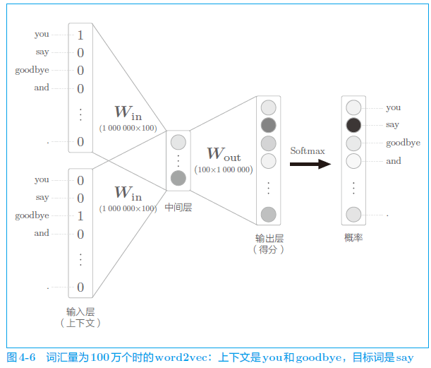
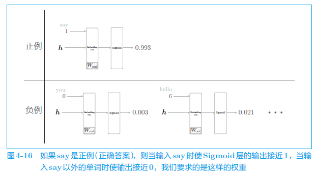
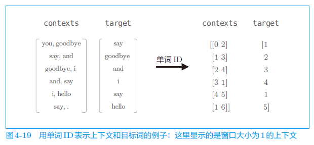

正文
4.1 word2vec 的改进 1
对于 CBOW 模型，在处理大规模语料库时，就会出现问题。
假设词汇量有 100 万个，CBOW 模型的中间层神经元有 100 个，输入层和输出层存在 100 万个神经元。在如此多的神经
出现问题：
4.1.1 Embedding 层
如果语料库的词汇量有 100 万个，则单词的 one-hot 表示的维数也会是 100 万，我们需要计算这个巨大向量和权重矩阵的乘积。
直觉上将单词转化为 one-hot 向量的处理和 MatMul 层中的矩阵乘法似乎没有必要。
创建一个从权重参数中抽取“单词 ID 对应行（向量）”的层，这里我们称之为 Embedding 层。
这个 Embedding 层存放词嵌入（分布式表示）。
在自然语言处理领域，单词的密集向量表示称为词嵌入（word embedding）或者单词的 分布式表示（distributed representation） 。
4.1.2 Embedding 层的实现
从矩阵中取出某一行的处理是很容易实现的。这里，假设权重 W 是 NumPy 的二维数组。如果要从这个权重中取出某个特定的行，只需写 W[2]W[5]。
1 2 3 import numpy as np21 ).reshape(7 , 3 )
array([[ 0, 1, 2],
[ 3, 4, 5],
[ 6, 7, 8],
[ 9, 10, 11],
[12, 13, 14],
[15, 16, 17],
[18, 19, 20]])
array([[ 6, 7, 8],
[ 9, 10, 11],
[12, 13, 14],
[15, 16, 17],
[18, 19, 20]])
从权重 W 中一次性提取多行的处理也很简单。只需通过数组指定行号即可。
1 2 idx = np.array([1 , 0 , 3 , 0 ])
array([[ 3, 4, 5],
[ 0, 1, 2],
[ 9, 10, 11],
[ 0, 1, 2]])
实现 Embedding 层的 forward() 和 backward()方法：
1 2 3 4 5 6 7 8 9 10 11 12 13 14 15 16 17 18 19 20 21 22 23 24 25 26 27 28 29 30 31 32 33 34 35 class Embedding :def __init__ (self, W ):""" 使用 params 和 grads 作为成员变量 """ self .params = [W]self .grads = [np.zeros_like(W)]self .idx = None def forward (self, idx ):""" 在成员变量 idx 中以数组的形式保存需要提取的行的索引（单词 ID） 在反向传播时，从上一层（输出侧的层）传过来的梯度将原样传给下一层（输入侧的层）。 不过，从上一层传来的梯度会被应用到权重梯度 dW 的特定行（idx） """ self .paramsself .idx = idxreturn outdef backward (self, dout ):self .grads0 """ dW[self.idx] = dout 是不太好的方式，存在一个问题， 这一问题发生在 idx 的元素出现重复时，其中某个值就会被覆盖掉。 """ for i, word_id in enumerate (self .idx):return None
4.2 word2vec 的改进 2
采用名为**负采样（negative sampling）**的方法作为解决方案。使用 Negative Sampling 替代 Softmax，无论词汇量有多大，都可以使计算量保持较低或恒定。
4.2.1 中间层之后的计算问题

输入层和输出层有 100 万个神经元。在上一节中，通过引入 Embedding 层，节省了输入层中不必要的计算。剩下的问题就是中间层之后的处理。此时，在以下两个地方需要很多计算时间。
4.2.2 从多分类到二分类
现在，我们来考虑如何将多分类问题转化为二分类问题。为此，我们先考察一个可以用“Yes/No”来回答的问题。比如，让神经网络来回答“当上下文是 you 和 goodbye 时，目标词是 say 吗？”这个问题，这时输出层只需要一个神经元即可。可以认为输出层的神经元输出的是 say 的得分。
输出层的神经元仅有一个。因此，要计算中间层和输出侧的权重矩阵的乘积，只需要提取 say 对应的列（单词向量），并用它与中间层的神经元计算内积即可。
4.2.3sigmoid 函数和交叉熵误差
在多分类的情况下，输出层使用 Softmax 函数将得分转化为概率，损失函数使用交叉熵误差。在二分类的情况下，输出层使用 sigmoid 函数，损失函数也使用交叉熵误差。
通过 sigmoid 函数得到概率 y y y y y y
L = − ( t log y + ( 1 − t ) log ( 1 − y ) ) L=-(t\log y+(1-t)\log(1-y))
L = − ( t log y + ( 1 − t ) log ( 1 − y ) )
其中，y y y t t t t t t t t t
4.2.4 多分类到二分类的实现
引入 Embedding Dot 层，该层将 Embedding 层和 dot 运算（内积）合并起来处理。
1 2 3 4 5 6 7 8 9 10 11 12 13 14 15 16 17 18 19 20 21 22 23 24 25 26 27 28 class EmbeddingDot :def __init__ (self, W ):""" params: 保存参数 grads: 保存梯度 embed: 保存 Embedding 层作为缓存 cache: 保存正向传播时的计算结果 """ self .embed = Embedding(W)self .params = self .embed.paramsself .grads = self .embed.gradsself .cache = None def forward (self, h, idx ):self .embed.forward(idx)sum (target_W * h, axis=1 )self .cache = (h, target_W)return outdef backward (self, dout ):self .cache0 ], 1 )self .embed.backward(dtarget_W)return dh
4.2.5 负采样

我们目前仅学习了正例（正确答案），还不确定负例（错误答案）会有怎样的结果。
当前的神经网络只是学习了正例 say，但是对 say 之外的负例一无所知。
而我们真正要做的事情是，对于正例（say），使 Sigmoid 层的输出接近 1；对于负例（say 以外的单词），使 Sigmoid 层的输出接近 0。
那么，我们需要以所有的负例为对象进行学习吗？答案显然是“No”。如果以所有的负例为对象，词汇量将暴增至无法处理（更何况本章的目的本来就是解决词汇量增加的问题）。为此，作为一种近似方法，我们将选择若干个（5 个或者 10 个）负例（如何选择将在下文介绍）。也就是说，只使用少数负例 。这就是负采样方法的含义。
4.2.6 负采样的采样方法
基于语料库中各个单词的出现次数求出概率分布后，只需根据这个概率分布进行采样就可以了。通过根据概率分布进行采样，语料库中经常出现的单词将容易被抽到，而“稀有单词”将难以被抽到。
使用 Python 来说明基于概率分布的采样：
4
1 2 3 'you' , 'say' , 'goodbye' , 'I' , 'hello' , '.' ]
'goodbye'
1 2 5 )
array(['you', '.', 'say', 'hello', 'say'], dtype='<U7')
1 2 5 , replace=False )
array(['goodbye', 'I', 'say', 'you', 'hello'], dtype='<U7')
1 2 3 0.5 , 0.1 , 0.05 , 0.2 , 0.05 , 0.1 ]
'I'
word2vec 中提出的负采样对刚才的概率分布增加了一个步骤。如下式所示，对原来的概率分布取 0.75 次方。
P ′ ( w i ) = P ( w i ) 0 . 7 5 ∑ j n P ( w j ) 0 . 7 5 P'(w_i)=\frac{P(w_i)^{0.75}}{\sum^n_jP(w_j)^{0.75}}
P ′ ( w i ) = ∑ j n P ( w j ) 0 . 7 5 P ( w i ) 0 . 7 5
为了防止低频单词被忽略。更准确地说，通过取 0.75 次方，低频单词的概率将稍微变高。
1 2 3 4 p = [0.7 , 0.29 , 0.01 ]0.75 )sum (new_p)print (new_p)
[0.64196878 0.33150408 0.02652714]
根据这个例子，变换前概率为 0.01（1%）的元素，变换后为 0.026…（2.6…%）。通过这种方式，取 0.75 次方作为一种补救措施，使得低频单词稍微更容易被抽到。
此外，0.75 这个值并没有什么理论依据，也可以设置成 0.75 以外的值。
1 2 3 4 5 6 7 8 corpus = np.array([0 , 1 , 2 , 3 , 4 , 1 , 2 , 3 ])0.75 2 1 , 3 , 0 ])print (negative_sample)
4.2.7 负采样的实现
1 2 3 4 5 6 7 8 9 10 11 12 13 14 15 16 17 18 19 20 21 22 23 24 25 26 27 28 29 30 31 32 33 34 35 36 37 38 39 40 41 42 43 44 45 class NegativeSamplingLoss :def __init__ (self, W, corpus, power=0.75 , sample_size=5 ):self .sample_size = sample_sizeself .sampler = UnigramSampler(corpus, power, sample_size)self .loss_layers = [SigmoidWithLoss() for _ in range (sample_size + 1 )]self .embed_dot_layers = [EmbeddingDot(W) for _ in range (sample_size + 1 )]self .params, self .grads = [], []for layer in self .embed_dot_layers:self .params += layer.paramsself .grads += layer.gradsdef forward (self, h, target ):""" h: 中间层的神经元 target: 正例目标 """ 0 ]self .sampler.get_negative_sample(target)self .embed_dot_layers[0 ].forward(h, target)self .loss_layers[0 ].forward(score, correct_label)for i in range (self .sample_size):self .embed_dot_layers[1 + i].forward(h, negative_target)self .loss_layers[1 + i].forward(score, negative_label)return lossdef backward (self, dout=1 ):0 for l0, l1 in zip (self .loss_layers, self .embed_dot_layers):""" 与正向传播相反的顺序调用各层的 backward() 函数即可 """ return dh
4.3 改进版 word2vec 的学习
4.3.1 CBOW 模型的实现

1 2 3 4 5 6 7 8 9 10 11 12 13 14 15 16 17 18 19 20 21 22 23 24 25 26 27 28 29 30 31 32 33 34 35 36 37 38 39 40 41 42 43 44 45 46 47 48 49 import sys'..' )from common.np import * from common.layers import Embeddingfrom ch04.negative_sampling_layer import NegativeSamplingLossclass CBOW :def __init__ (self, vocab_size, hidden_size, window_size, corpus ):0.01 * np.random.randn(V, H).astype('f' )0.01 * np.random.randn(V, H).astype('f' )self .in_layers = []for i in range (2 * window_size):self .in_layers.append(layer)self .ns_loss = NegativeSamplingLoss(W_out, corpus, power=0.75 , sample_size=5 )self .in_layers + [self .ns_loss]self .params, self .grads = [], []for layer in layers:self .params += layer.paramsself .grads += layer.gradsself .word_vecs = W_indef forward (self, contexts, target ):0 for i, layer in enumerate (self .in_layers):1 / len (self .in_layers)self .ns_loss.forward(h, target)return lossdef backward (self, dout=1 ):self .ns_loss.backward(dout)1 / len (self .in_layers)for layer in self .in_layers:return None
4.3.2 CBOW 模型的学习代码
1 2 3 4 5 6 7 8 9 10 11 12 13 14 15 16 17 18 19 20 21 22 23 24 25 26 27 28 29 30 31 32 33 34 35 36 37 38 39 40 41 42 43 44 45 46 47 48 import sys'..' )import numpy as npfrom common import configTrue import picklefrom common.trainer import Trainerfrom common.optimizer import Adamfrom common.util import create_contexts_target, to_cpu, to_gpufrom dataset import ptb5 100 100 10 'train' )len (word_to_id)if config.GPU:if config.GPU:'word_vecs' ] = word_vecs.astype(np.float16)'word_to_id' ] = word_to_id'id_to_word' ] = id_to_word'cbow_params.pkl' with open (pkl_file, 'wb' ) as f:1 )
4.3.3 CBOW 模型的评价
1 2 3 4 5 6 7 8 9 10 11 12 13 14 15 import sys'..' )from common.util import most_similarimport pickle'cbow_params.pkl' with open (pkl_file, 'rb' ) as f:'word_vecs' ]'word_to_id' ]'id_to_word' ]'you' , 'year' , 'car' , 'toyota' ]for query in querys:5 )
4.4 word2vec 相关的其他话题
4.4.1 word2vec 的应用例
在自然语言处理领域，单词的分布式表示之所以重要，原因就在于迁移学习（transfer learning） 。迁移学习是指在某个领域学到的知识可以被应用于其他领域。
将单词和文档转化为固定长度的向量是非常重要的。因为如果可以将自然语言转化为向量，就可以使用常规的机器学习方法（神经网络、SVM 等）
4.4.2 单词向量的评价方法
单词相似度的评价通常使用人工创建的单词相似度评价集来评估。比如，cat 和 animal 的相似度是 8，cat 和 car 的相似度是 2……类似这样，用 0～10 的分数人工地对单词之间的相似度打分。然后，比较人给出的分数和 word2vec 给出的余弦相似度，考察它们之间的相关性。
4.5 小结
Embedding 层保存单词的分布式表示，在正向传播时，提取单词 ID 对应的向量
因为 word2vec 的计算量会随着词汇量的增加而成比例地增加，所以最好使用近似计算来加速
负采样技术采样若干负例，使用这一方法可以将多分类问题转化为二分类问题进行处理
基于 word2vec 获得的单词的分布式表示内嵌了单词含义，在相似的上下文中使用的单词在单词向量空间上处于相近的位置
word2vec 的单词的分布式表示的一个特性是可以基于向量的加减法运算来求解类推问题
word2vec 的迁移学习能力非常重要，它的单词的分布式表示可以应用于各种各样的自然语言处理任务